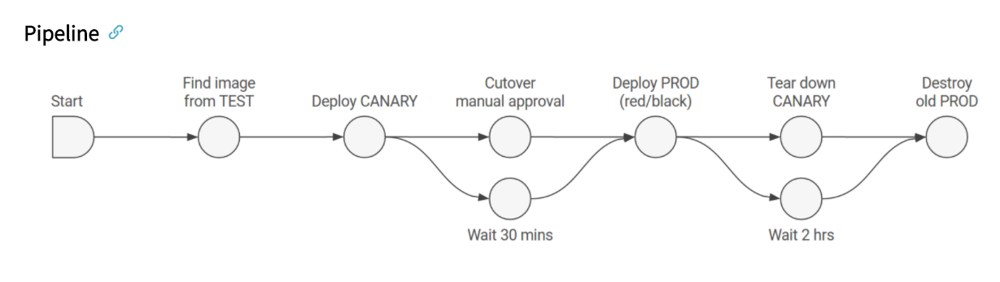
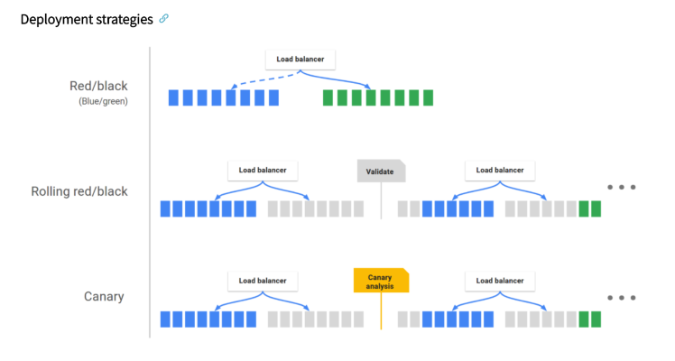

Application Deployment
Spinnaker's application deployment feature is responsible for the continuous delivery workflow.
Some of the basic concepts of application deployment are:
-
Pipeline
-
Stage
-
Deployment Strategies
Let’s discuss and learn how these concepts work.
Pipeline
The main deployment management constructor of Spinnaker is the pipeline. A pipeline defines a flow of actions in a particular sequence; for the code traversal, from commit all the way until it is deployed in the target deployment environment.
A pipeline comprises a series of actions known as stages. You can add/modify stages to a pipeline as you define it, allowing you to pass parameters from one stage to the next along the pipeline. The image below shows an example pipeline.

Stage
In Spinnaker, an automatically created building block for the pipeline is known as a stage. A stage in a pipeline is used to define a specific and finite activity. Herein, You can specify an action to be performed on a specific pipeline here. You can have as many stages as you wish in a pipeline based on what actions you want to perform; for example, a stage for code build, a stage for static code analysis, a stage for code deploy, etc.
Spinnaker can integrate with a large number of third third-party tools for performing the actions specified in a pipeline. For example, you can integrate Spinnaker with Jenkins, SonarQube, Terraform, Vault, test automation tools, etc.
Deployment Strategies
Spinnaker manages cloud-native deployment strategies as exclusive constructs, handling primary arrangements such as disabling old server groups, enabling new server groups, and verifying health checks. Spinnaker backs the red/black (also known as blue/green) strategy, with rolling red/black and canary strategies in active development. This enables the user to define the custom deployment strategy based on their organization requirements.
Spinnaker supports:
-
Blue/green (AKA Red/Black)
-
Rolling Red/black
-
Highlander
-
Dark Rollout
Blue/Green (AKA Red/Black): Blue/Green strategy, AKA Red/black strategy consists of creating new server groups and once the new server groups become healthy, removing the old server groups from the load balancer.
Highlander: The highlander strategy consists of creating new server groups and once the new server groups become healthy the old server groups are deleted.
Dark rollout (None): Dark roll outs involve doing nothing about the old server groups. Both old and new server groups stay on the load balancer.
Refer to the figure below for a better understanding: 